|
Please show your work before checking
the answer and explanations or use a StatsApp to generate the solutions.
An Important Tip. Perform a hypothesis test for two population means. Checking the given condition to determine which procedure is suitable to test the hypothesis each question.
Problem 1. A researcher was interested in comparing the resting pulse
rate of people who exercise
regularly and people who do not exercise regularly. Independent simple random samples
of 16 people ages 30-40 who do not exercise regularly and 12 people ages 30-40 who do
exercise regularly were selected and the resting pulse rate of each person was measured.
The summary statistics are as follows.
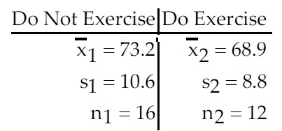
At the 2.5% significance level, do the data provide sufficient evidence to conclude that the
mean resting pulse rate of people who do not exercise regularly is greater than the mean
resting pulse rate of people who exercise regularly? Use the critical-value approach.
Short Answer
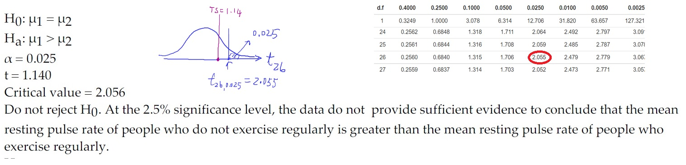
Problem 2.
A researcher was interested in comparing the GPAs of students at two different colleges.
Independent simple random samples of 8 students from college A and 13 students from
college B yielded the following GPAs.
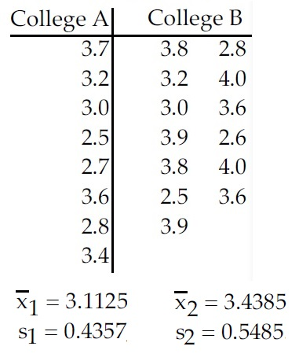
At the 10% significance level, do the data provide sufficient evidence to conclude that the
mean GPA of students at college A differs from the mean GPA of students at college B?
Use the critical-value approach.
Short Answer
Problem 3.
A researcher was interested in comparing the response times of two different cab
companies. Companies A and B were each called at 50 randomly selected times. The calls
to company A were made independently of the calls to company B. The response times
for each call were recorded. The summary statistics were as follows:
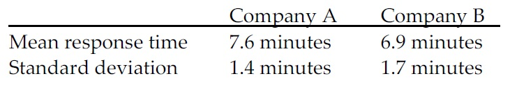
At the 0.02 level of significance, do the data provide sufficient evidence to conclude that
the mean response time for company A differs from the mean response time for company
B? Use the critical value approach.
Short Answer
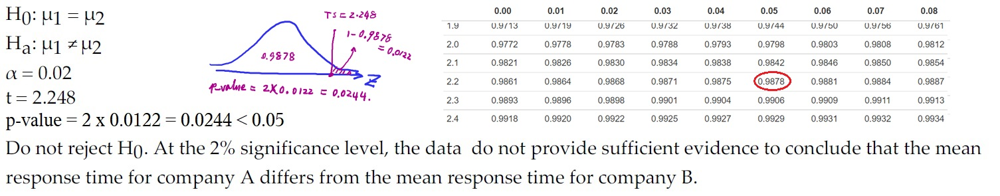
Problem 4. A researcher wishes to determine whether the systolic blood pressure
of people who follow a vegetarian diet is, on average, lower than the systolic blood pressure of those
who follow a nonvegetarian diet.
Independent simple random samples of 85 vegetarians and 75 nonvegetarians yielded
the following sample statistics:
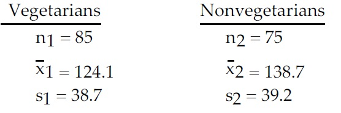
Use the sample data to test the claim that the mean systolic blood pressure for vegetarians
is lower than the mean systolic blood pressure for nonvegetarians. Test the claim using a
significance level of 0.01. Use the P-value approach.
Short Answer
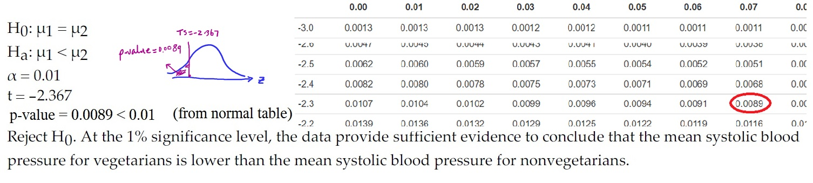
Problem 5. A researcher was interested in comparing the amount of
time spent watching television by women and by men. Independent simple random
samples of 14 women and 17 men were selected, and each person was asked how many
hours he or she had watched television during the previous week. The summary
statistics are as follows.
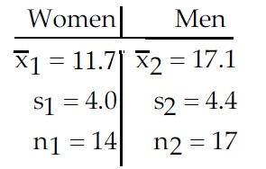
At the 5% significance level, do the data provide sufficient evidence to conclude that the
mean time spent watching television by women is less than the mean time spent watching
television by men? Use the critical-value approach.
Short Answer
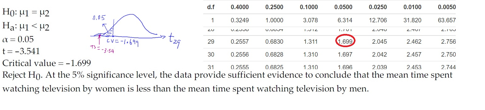
Problem 6.
Five students took a math test before and after tutoring. Their scores were as follows.
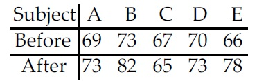
At the 1% significance level, do the data provide sufficient evidence to conclude that the
mean score before tutoring differs from the mean score after tutoring? Use the
critical-value approach.
Short Answer
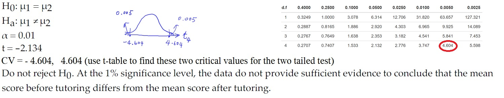
Problem 7.
The table below shows the weights, in pounds, of seven subjects before and after
following a particular diet for two months.
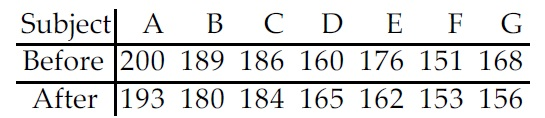
At the 1% significance level, do the data provide sufficient evidence to conclude that the
diet is effective in reducing weight? Use the critical-value approach.
Short Answer
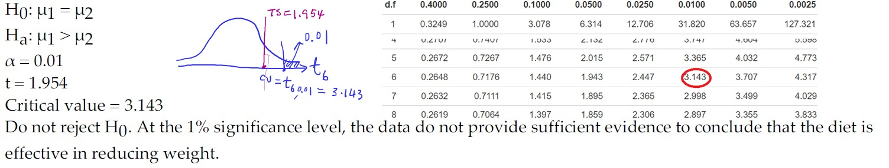
Problem 8.
A test of abstract reasoning is given to a random sample of students before and after
completing a formal logic course. The results are shown below.
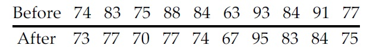
At the 5% significance level, do the data provide sufficient evidence to conclude that that
the mean score after the course differs from the mean score before the course? Use the
critical-value approach.
View Answer
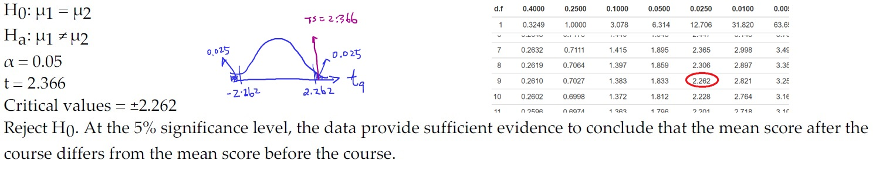
|